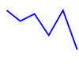

<html>
  <head>
    <title>d3.js: Working with SVG</title>
    <meta http-equiv="Content-Type" content="text/html; charset=UTF-8"/>
    <link rel="stylesheet" href="assets/deck.css">
    <script src="vendor/jquery.min.js" type="text/javascript"></script>
  </head>
</html>
<body>
  <textarea id="source">class: center, middle

# d3.js: Working with SVG

---

# What is SVG?

SVG is very similiar to HTML, but is used more specifically to draw vector graphics on the web (and outside of it.)

### Why Vector Graphics?

Vector graphics are much easier to compose, modify and scale because they do not experience the same degredation that bitmaps do.

### Building Blocks

Much like HTML provides us some building blocks like `p`, `div`, `span` etc, so does SVG. For example, it's really easy to create primitive graphic forms like `rect` and `path` in SVG.

### Additional Features

Aside from creating elements in SVG, you can also create gradients, filter effects, animations, add user interactions with JavaScript etc.

https://developer.mozilla.org/en-US/docs/Web/SVG/Tutorial/Introduction

---

# Creating SVG Elements

First you always need to create an SVG document that will contain all your graphical elements. Note that 0,0 is in the **top left** corner.

```html
<html>
  <head>
  </head>

  <body>
    <svg width="200" height="200">
      <circle cx="0" cy="0" r="10"></circle>
    </svg>
  </body>
</html>
```
<div style="border: 1px solid red; display: inline-block">
  <svg width="200" height="200">
    <circle cx="0" cy="0" r="10"></circle>
  </svg>
</div>

---

# SVG Group (g) element

The group element is probably the most important SVG element. It has no visual form, but it lets you group elements together and then transform them as a unit.

http://www.w3.org/TR/SVG11/coords.html

For example:

```html
<svg width="200" height="200">
  <g class="circles" transform="translate(30,30)">
    <circle cx="0" cy="0" r="10"></circle>
    <circle cx="20" cy="20" r="10"></circle>
  </g>
</svg>
```

<div style="border: 1px solid red; display: inline-block">
  <svg width="200" height="200">
    <g class="circles">
      <circle cx="0" cy="0" r="10"></circle>
      <circle cx="20" cy="20" r="10"></circle>
    </g>
  </svg>
</div>

<div style="display:inline-block; width: 200px; vertical-align: top;">Move down 30 pixels and right 30 pixels:</div>

<div style="border: 1px solid red; display: inline-block">
  <svg width="200" height="200">
    <rect x="20" y="20" height="40" width="40" fill="none" stroke="blue"></rect>
    <g class="circles" transform="translate(30,30)">
      <circle cx="0" cy="0" r="10"></circle>
      <circle cx="20" cy="20" r="10"></circle>
    </g>
  </svg>
</div>

---

# SVG primitives

There are a few primitive shapes that you may want to use as part of your visualizations:

* `rect`
* `circle`
* `line`
* `path`
* `text`

For example:

```html
<div style="border: 1px solid red; display: inline-block">
  <svg width="200" height="200">
    <rect x="20" y="20" height="80" width="120" fill="none" stroke="blue"></rect>
    <line x1="0" y1="0" x2="100", y2="120" stroke="orange"/>
    <text x="20" y="40">Oh Hai</text>
  </svg>
</div>
```

<div style="border: 1px solid red; display: inline-block">
  <svg width="200" height="200">
    <rect x="20" y="20" height="80" width="120" fill="none" stroke="blue"></rect>
    <line x1="0" y1="0" x2="100", y2="120" stroke="orange"/>
    <text x="20" y="40">Oh Hai</text>
  </svg>
</div>

---

# SVG Paths

The `path` element is probably the most powerful SVG shape available to the user. It can be used to create any of the other basic shapes, as well things like flowing lines. Functionally the path element has one important attribute: `d`.

```html
<path d="..." />
```

It represents the instructions for what the path should look like. for example:

```html
<path d="M10 10 L 30 40 H 50 V 10 L 10 10Z" />
```

Move to 10,10. Draw a line to 30,40. Draw a horizontal line to 50,40. Draw a vertical line to 50,10. Draw a line back to 10,10 and close the path.

<div style="border: 1px solid red; display: inline-block">
<svg height="200" width="200">
  <path d="M10 10 L 30 40 H 50 V 10 L 10 10Z" fill="none"
  stroke="orange"/>
</svg>
</div>

---

# SVG Paths - Bezier Curves

Bazier curves let us create curved paths using control points.

`C x1 y1, x2 y2, x y (or c dx1 dy1, dx2 dy2, dx dy)`

```html
<svg width="190px" height="160px">
  <g stroke="black" fill="transparent">
    <path d="M10 10 C 20 20, 40 20, 50 10" />
    <path d="M70 10 C 70 20, 120 20, 120 10"/>
    <path d="M130 10 C 120 20, 180 20, 170 10"/>
    <path d="M10 60 C 20 80, 40 80, 50 60"/>
    <path d="M70 60 C 70 80, 110 80, 110 60"/>
    <path d="M130 60 C 120 80, 180 80, 170 60"/>
    <path d="M10 110 C 20 140, 40 140, 50 110"/>
    <path d="M70 110 C 70 140, 110 140, 110 110"/>
    <path d="M130 110 C 120 140, 180 140, 170 110"/>
  </g>
</svg>
```
<div style="display:inline-block;">
<svg width="190px" height="160px">
  <g stroke="black" fill="transparent">
    <path d="M10 10 C 20 20, 40 20, 50 10" />
    <path d="M70 10 C 70 20, 120 20, 120 10"/>
    <path d="M130 10 C 120 20, 180 20, 170 10"/>
    <path d="M10 60 C 20 80, 40 80, 50 60"/>
    <path d="M70 60 C 70 80, 110 80, 110 60"/>
    <path d="M130 60 C 120 80, 180 80, 170 60"/>
    <path d="M10 110 C 20 140, 40 140, 50 110"/>
    <path d="M70 110 C 70 140, 110 140, 110 110"/>
    <path d="M130 110 C 120 140, 180 140, 170 110"/>
  </g>
</svg>
</div>

<div style="display:inline-block;">

</div>

<div style="display:inline-block; vertical-align:top;">
  Read more: <br>[MDN Path Tutorial](https://developer.mozilla.org/en-US/docs/Web/SVG/Tutorial/Paths)
</div>

---

# SVG Text

Text elements in SVG are fairly easy to create:

```html
<text fill="blue" font-size="20" x="10" y="30">Some SVG Text</text>
```

<svg width="190px" height="60px">
  <text fill="blue" font-size="20" x="10" y="30">Some SVG Text</text>
</svg>

But there are a few caveats:

1. The `text` element **does not wrap text**. If your text is too long for the element, it will be cropped. It's up to you to break it up and make multiple text elements to simulate multi-line behaviour
2. You can't `ctrl-f` to find any strings inside `text` elements.
---

class:middle,center

# d3 and SVG

---

# Creating SVG element w D3

Any chart that you create with d3 will likely be contained within an SVG element. You can create one like so:

```javascript
var svg = d3.select(document.body)
  .append("svg")
  .attr("width", 100)
  .attr("height", 100);
```

Now you'll have a reference to an svg document into which you can add any other nodes.

---

# Creating SVG element w D3

Any SVG element has an expected set of attributes that usually take care of positioning it. For example:

* `rect` - `x`, `y`, `width` & `height` are the core attributes.
* `circle` - `cx`, `cy` & `r` are the core attributes.

etc.

Additionally, there are shared styling attributes that most elements are impacted by. For exampe:

* `fill`, `font-size`, `stroke` and [many many others](https://developer.mozilla.org/en-US/docs/Web/SVG/Attribute#Presentation) (scroll to Presentation attributes)

Any time you're unsure what attributes a specific element requires (because there is a lot of inconsistency between attribute names i.e.  x, x0, x1 etc,) you can just google "mdn nodeName" (for example "[mdn rect](https://www.google.com/search?q=mdn+rect&oq=mdn+rect&aqs=chrome.0.69i59j69i61j0l4.1835j0j7&sourceid=chrome&espv=210&es_sm=91&ie=UTF-8)".)

---

# Creating SVG element w D3

To create any SVG element using d3, simply append the right node and set the expected attributes:

```javascript
svg.append("circle")
  .attr("cx", 10)
  .attr("cy", 15)
  .attr("r", 10);
```


Most of the time you won't actually be setting values directly like this, because they will come from your data. The second argument to the `attr` function can be a function that returns the correct value. For example:

```javascript
var xScale = d3.scale.linear()
  .domain([1,100])
  .range([0, width]);

svg.selectAll("circle")
  .data([1,3,6], function(d) { return d; })
  .enter()
    .append("circle")
    .attr("cx", xScale)
    .attr("cy", 10)
    .attr("r", 10);
```
---

# d3's generators

Some of the elements we looked at are somewhat complicated. For example, the `path` element doesn't look like fun to compose by hand. Thankfully, d3 has some generators we can use, that will return the value we need for that `d` attribute. For example:

```javascript
// create a generator function:
var line = d3.svg.line()
    .x(function(d) { return xScale(d.year); })
    .y(function(d) { return yScale(d.value); })
    .interpolate("basis");

g.append("path")
    .attr("d", line);
```

---

# d3's generators - line

From the great writeup here: https://www.dashingd3js.com/svg-paths-and-d3js
Interpolations:
<div style="font-size: 14px">
  <div style="display:inline-block; width:120px"vertical-align:top;>
    
    <div>basis - a B-spline, with control point duplication on the ends.</div>
  </div>
  <div style="display:inline-block; width:120px;vertical-align:top;">
    
    <div>basis-closed - a closed B-spline (loop)</div>
  </div>
  <div style="display:inline-block; width:120px;vertical-align:top;">
    
    <div>basis-open - an open B-spline; will not intersect beginning or end.</div>
  </div>
  <div style="display:inline-block; width:120px;vertical-align:top;">
    
    <div>bundle - equivalent to basis, except the tension parameter is used to straighten the spline.</div>
  </div>
  <div style="display:inline-block; width:120px;vertical-align:top;">
    
    <div>cardinal - a Cardinal spline, with control point duplication on the ends. </div>
  </div>
  <div style="display:inline-block; width:120px;vertical-align:top;">
    
    <div>cardinal-closed - a closed Cardinal spline, as in a loop. </div>
  </div>
  <div style="display:inline-block; width:120px;vertical-align:top;">
    
    <div>cardinal-open - an open Cardinal spline; may not intersect the start or end, but will intersect other control points. </div>
  </div>
  <div style="display:inline-block; width:120px;vertical-align:top;">
    
    <div>linear - piecewise linear segments, as in a polyline. </div>
  </div>
  <div style="display:inline-block; width:120px;vertical-align:top;">
    
    <div>monotone - cubic interpolation that preserves monotonicity in y. </div>
  </div>
  <div style="display:inline-block; width:120px;vertical-align:top;">
    
    <div>step-after - alternate between horizontal and vertical segments, as in a step function. </div>
  </div>
  <div style="display:inline-block; width:120px;vertical-align:top;">
    
    <div>step-before - alternate between vertical and horizontal segments, as in a step function. </div>
  </div>
</div>

---

# d3's generators - area

Very similar to the line generator, the area generator gives us the area under the curve.

http://bl.ocks.org/mbostock/3885211

```javascript
var area = d3.svg.area()
    .x(function(d) { return x(d.date); })
    .y0(function(d) { return y(d.y0); })

    // for when we're stacking areas
    .y1(function(d) { return y(d.y0 + d.y); });

```

For more generators see: https://github.com/mbostock/d3/wiki/SVG-Shapes

---

class:middle,center

# Questions?

---

class:middle,center
# Code Time!
## Exercise: Working with SVG

---

class:middle,center
# Code Time AGAIN!
## Exercise: Making a Scatterplot</textarea>
  <script src="vendor/remark.min.js" type="text/javascript"></script>
  <script type="text/javascript">
    var slideshow = remark.create();
  </script>
  <script src="vendor/underscore.js" type="text/javascript"></script>
  <script src="vendor/d3.js" type="text/javascript"></script>
  
</body>

